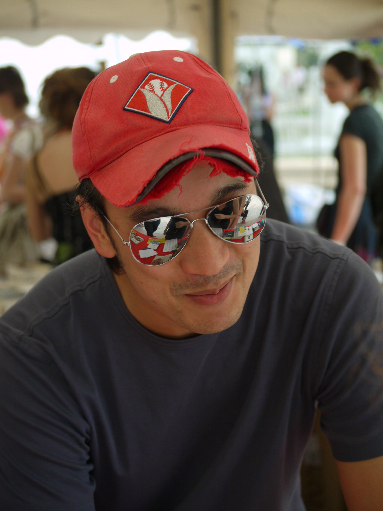

Matt Huynh
Artist of the Boat
Matt Huynh, a Vietnamese-Australian visual artist and storyteller, known for his bold brush and ink paintings that mix both Eastern sumi-e ink traditions with Western comic book influences. Matt Huynh is born in Sydney to Vietnamese refugee parents and Huynh's work often explores the themes of wars, diaspora and the experiences of asylum seekers and migrant communities.
In 2025, Huynh collaborated with an author named Nam Le to adapt Le's short story "The boat" into an interactive graphic novel made for the readers. This project was commissioned by the SBS Australia to show respect the 40th anniversary of the fall of Saigon and Vietnamese resettlement in Australia. The adaptation itself features 222 hand-painted illustrations, 59 animated sequences and integrates sound design to provide an immersive experience of a 16-year-old girl's distressing journey as a refugee.

Nam Le
Author of the Boat